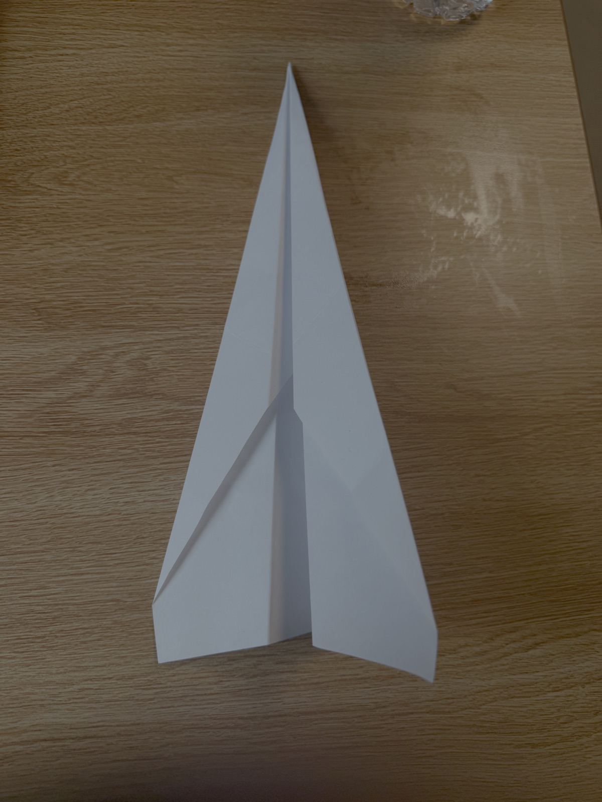
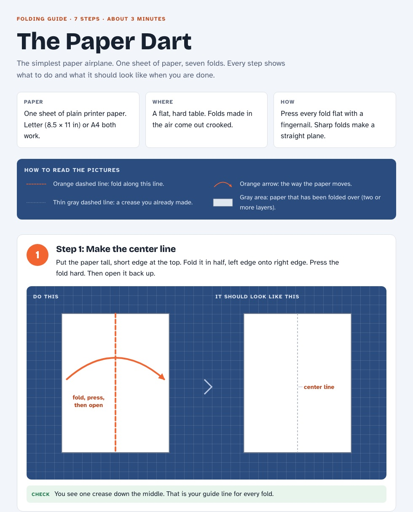

04 M — Sheet 06 / 06
Ask an AI to teach you how to make a paper airplane.

The assignment was to ask an AI to teach me how to make a paper airplane. I gave the task to Claude and deliberately set it to its maximum effort level — not because folding a dart needs it, but because I wanted to see how far a model would take a task this small.
What came back was a published web page called The Paper Dart: seven steps, two diagrams for each one (the fold to make, then what the paper should look like afterwards), a legend explaining what the dashed lines and the arrows mean, a one-line check after every step, a section on how to hold and throw it, and three fixes for when the plane dives, stalls or turns.

The diagrams are not sketches: they are drawn to the real proportions of a sheet of Letter paper. It also checked the folds against six published guides, found that they disagree about one step — whether the flaps end up inside or outside when the plane is folded in half — went with the majority, and said on the page that the guides disagreed.